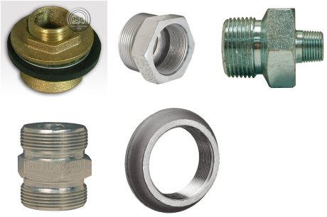
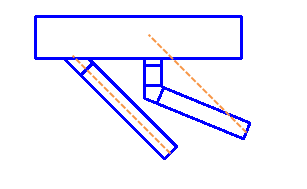

Adjustable Versus Perpendicular Spud
I recently presented an explanation of some Revit MEP family editor part type classes, which led to a follow-up:
Question: Thank you for the detailed answer about the duct fittings. I have a similar problem with one of the pipe fittings, namely spud. I know what a spud is, but not the difference between an adjustable and a perpendicular one.
Can you explain the actual difference, please?
Here is an image with some different spuds that I collected:

Answer: Spuds are analogous to taps in ductwork, which also have adjustable and perpendicular part types.
Their difference is probably best described by example. Here are two smaller branches, both routed from the larger main at 45 degrees:

The adjustable tap on the left adjusted to accommodate the 45-degree route.
The perpendicular tap on the right is constrained to tap perpendicularly off the main. Then, an elbow is automatically inserted after a short duct length to route the branch to the picked point.
Many thanks to Martin Schmid for this explanation.